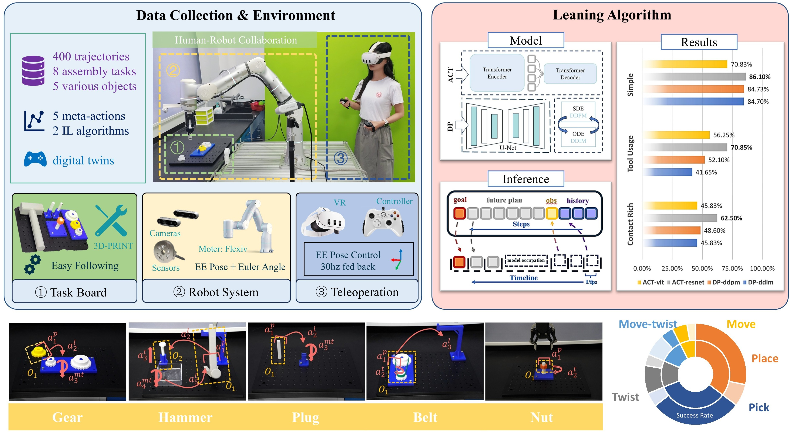

HAIL is a human-in-the-loop imitation learning framework designed for complex robotic assembly tasks under real-world conditions.
HAIL: Human-in-the-loop Assembly Imitation Learning System
Overview

Figure 1: The HAIL system architecture showing mixed reality teleoperation (left), robotic assembly tasks (center), and policy learning pipeline (right). This diagram illustrates the complete workflow from human demonstration to policy execution.
Abstract
As manufacturing systems evolve toward flexibility and adaptability, traditional automation methods face growing limitations in handling dynamic, contact-rich assembly tasks. To bridge this gap, we present HAIL, a human-in-the-loop imitation learning framework designed for real-world industrial assembly. HAIL integrates a mixed reality demonstration system for low-cost, high-precision data collection, a standardized multi-task benchmark, and two representative policy learning approaches: Diffusion Policy (DP) and Action Chunking Transformer (ACT).The benchmark comprises eight diverse tasks, each decomposed into atomic meta actions to enable fine-grained analysis. Extensive experiments reveal that ACT excels in temporally consistent, long-horizon control, while DP exhibits robustness under high uncertainty due to its stochastic inference. Beyond algorithm comparison, we identify critical practical design insights—such as the importance of real-time inference, input preprocessing, and task simplification—for deploying imitation learning on physical robots. HAIL offers a reproducible, scalable foundation for advancing embodied intelligence in real-world robotic assembly.
Experiment
We conducted extensive experiments on eight assembly tasks, evaluating both ACT and Diffusion Policy approaches. The tasks cover gear assembly, gear disassembly, hammer strike, hammer pull out, cylinder peg insert, square peg insert, belt removal and nut tightening scenarios. Below are videos and key visual results from our experiments
Gear assembly/disassembly

Link: https://pan.sjtu.edu.cn/web/share/13bdd04e8ffb00e545d32382a83a92a5, password: sjtu
Hammer strike

Link: https://pan.sjtu.edu.cn/web/share/b0a03f67d1f81ac9162e9d01dfff111a, password: sjtu
Cylinder peg insert

Link: https://pan.sjtu.edu.cn/web/share/1e4076facdcb2dec459e8e03d04e9454, password: sjtu
Belt removal

Link: https://pan.sjtu.edu.cn/web/share/7a9b87cb2017a74a1ae204017fc476ba, password: sjtu
Nut Tightening

Link: https://pan.sjtu.edu.cn/web/share/cca791183075107326c3b2a653313bbb, password: sjtu
Evaluation Results


Discussion
We systematically evaluate four policy learning algorithms: DP-DDIM, DP-DDPM, ACT-ResNet, and ACT- Vit and five meta actions and summarize several practical lessons for deploying IL-based systems that work well on real robots.
BibTeX
@article{zhao2024hail,
title={HAIL: Human-in-the-loop Assembly Imitation Learning System},
author={Zhao, Qianyou and Wu, Duidi and Shen, Yuliang and Li, Junlai and Yu, Qiaojun and Zhang, Shuo and Qi, Jin and Hu, Jie},
journal={Proceedings of the IEEE/CVF Conference on Computer Vision and Pattern Recognition},
year={2024}
}